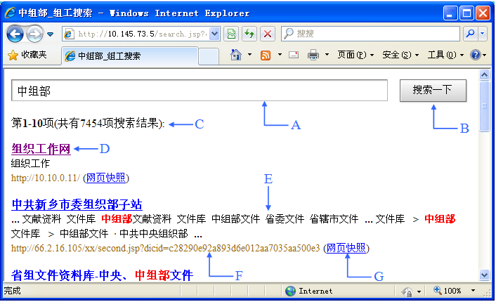

|
组工搜索使用了高性能的“网络蜘蛛”程序(spider)自动的在大组工网中搜索信息，
可定制、高扩展性的调度算法使得搜索器能在极短的时间内收集到最大数量的大组工网信息。
组工搜索服务器架设在湖北黄冈，搜索范围涵盖了中组部组织工作网和全国大组工网省区市县大部分站点。
组工搜索引擎目前已经拥有30万页以上搜索信息库，并且还在以每周超过5万页的速度不断增长。
基本搜索
组工搜索引擎简单方便。
仅需输入查询内容并敲一下回车键（enter)，即可得到相关资料。
或者输入查询内容后，用鼠标点击“搜索一下”按钮，也可得到相关资料。
输入的查询内容可以是一个词语、多个词语、一句话。
例如：可以输入[干部选拔 任用 条例]
组工搜索引擎严谨认真，要求“一字不差”。
例如：分别搜索 [十大事件] 和 [十大新闻] ，会得到不同的结果。
因此在搜索时，您可以试用不同的词语。
输入多个词语搜索
输入多个词语搜索（不同字词之间用一个空格隔开），可以获得更精确的搜索结果。
例如：想了解“人事任免”相关信息，在搜索框中输入
获得的搜索效果会比输入 [人事任免] 得到的结果更好。
在组工搜索查询时不需要使用符号"and"或"+"，组工搜索会在多个以空格隔开的词语之间自动添加"+"。
组工搜索提供符合您全部查询条件的资料，并把最相关的网页排在前列。
减除无关资料
有时候，排除含有某些词语的资料有利于缩小查询范围。
组工搜索支持“-”功能，用于有目的地删除某些无关网页，但减号之前必须留一空格。
例如：要搜寻关于“干部考核”，但不含“年度”的资料，可使用如下查询：
并行搜索
使用“a|b”来搜索“或者包含词语a，或者包含词语b”的网页。
例如：您要查询“党建”或“基层”相关资料，无须分两次查询，只要输入 [基层|党建] 搜索即可。
组工搜索会提供跟“|”前后任何字词相关的资料，并把最相关的网页排在前列。
网页快照
大家在浏览大组工网网站的时候肯定都遇到过“该页无法显示”（找不到网页的错误信息）。
至于网页连接速度缓慢，要十几秒甚至几十秒才能打开更是家常便饭。
出现这种情况的原因很多，比如：网站服务器暂时中断或堵塞、网站已经更改链接等等。无法登录网站的确是一个令人十分头痛的问题。
网页快照能很好的解决这个问题。组工搜索引擎已先预览各网站，拍下网页的快照，为用户贮存大量应急网页。
网页快照功能在组工搜索的服务器上保存了几乎所有网站的大部分页面，使用在不能链接所需网站时，
组工搜索暂存的网页也可救急。而且通过网页快照寻找资料要比常规链接的速度快得多。
因为网页快照的服务稳定，下载速度极快，不会再受死链接或网络堵塞的影响。
搜索结果页指南

|
A.
|
搜索框
在这里，您仅需输入查询内容并敲一下回车键（enter)，即可得到相关资料。
或者，您输入查询内容后，用鼠标点击“搜索一下”按钮，也可得到相关资料。
|
|
B.
|
“搜索一下”按钮
您只要点击此按钮，或敲“enter”（回车键），组工搜索引擎便开始搜索。
|
|
C.
|
搜索结果统计
这是有关搜索结果数量、当前页面显示数量的统计。
|
|
D.
|
网页标题
这是搜索结果中该网页的标题。点击该网页标题可直达该网页。
|
|
E.
|
网页摘要
通常是网页开始部分的摘要。其中您输入搜索的词语，都已高亮显示，以便阅读。
|
|
F.
|
网页网址（url）
这是搜索结果中该网页的网址（url）。
|
|
G.
|
网页快照
点击每条搜索结果后的“网页快照”，可查看该网页的快照内容。
组工搜索引擎已先预览各网站，拍下网页的快照，为用户贮存大量的应急网页。
|
常见问题解答
如何缩小搜索范围?
为什么我找不到资料？
根据搜索习惯表明，用户找不到资料的两个最常见原因，一是输入的词语中含有错别字，二是未使用多个词语搜索。
搜索引擎并不理解网页上的内容，只会找出跟您输入的词语相关的网页。
所以，输入[拥带]、[以德制国]搜索，是找不到跟“拥戴”、“以德治国”相关资料的；
简体和繁体有无影响?
英文字母大小写有无影响?
组工搜索引擎不区分英文字母大小写。所有的字母均当做小写处理。
例如：输入"book"，或"BOOK",或"bOOk"，结果都是一样的。
如有其它疑问，可通过中组部组织工作网邮件系统发信给：湖北省黄冈市委组织部hbhg@zhzb.gov。
欢迎您的批评指正！
|